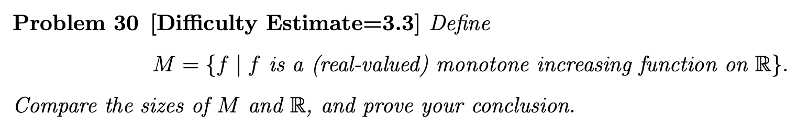

The fall of my freshman year¶
{kind=link}
一个普通的 Review。会慢慢更新。
专业课简评¶
计算机程序的构造与解释（SICP）91¶
我是跨选的 sicp，因为和 cpppl 冲了所以免修了，课也去的比较少。但我觉得这是我这个学期在南大听的最震撼的一门课。
{kind=link}
樾哥虽然身体好像不太好，但上课非常有激情，讲得很生动，而且有互动环节（我因为在群里最后一个发言而被点上去过一次）
助教团非常热情，课程群有“大一的木斧助教”，结课后还有和助教 gg 一起的团建活动。
总的来说，课程质量是非常高的。作业虽然往年有很多人说难，但是实际上如果不做 Just For Fun (Optional) 部分的话，还是不算难的。主要难点其实在于最后学 Scheme 的时候，Scheme 神奇的语法实在是有点反直觉，也不太好写。
Scheme K-Curry （这个写了我两个小时）
1 2 3 4 5 6 7 8 9 10 11 12 13 14 15 16 17 18 19 20 21 | |
关于考试：
- 期中很有点难，特别是 P4: One Function For All（内容是 lambda 与 foldl foldr），只考了七十多。
- 期末挺简单的，但是 89.5 有点难受了。（
提前交卷结果看漏了一道题..3 分没了）
总的来说给分也挺好，没有平时分所以可以全翘（？
作业 50% + 期中 25% + 期末 25%
感觉应该是能见到的作业分最多的课了。
跨选了这门课虽然有点累，但最后还是很有成就感的。
{kind=link}
信息与计算科学导论（离散数学 I）98¶
这门课其实就是离散改了个名，讲了集合论和递归。
今年还有神奇的拓展小知识（图灵机，Lean4）
可以玩一玩这个好玩的小游戏
Zsir（仲老师）课上讲的比较直白简单，但作业难度挺大的，但是可以写 Give up
{kind=link}
前面集合论我做了两次 Challenge Seeker，两次 Hacker，一次 Poet 的作业。Challenge Seeker 的作业是真的难写，好像有概率碰到 IMO 的题（反正都是竞赛题）。Hacker 的作业一般比较简单（敲代码），和 Experienced 难度相当。Poet 一般每次的题目都很有趣（写一篇小论文，比如这个），看到感兴趣的写一下还是很好玩的。后面递归和图灵机的部分我没听懂（但好像这些内容比集合论简单，我只是书看少了），只好全部 Give up 了。。
Zsir 讲课还是很直白易懂的，但是由于一些神奇的原因这个授课是一句中文一句英文（讲嗨了会一直英文，时间不够了会一直中文），听感非常的神秘，间接让本来还比较易懂的课程内容变难了。
课程给分非常有特色，没有平时分和作业分（？
作业只要交了（写 Give up 也可以）就不会扣分，起始分数是 80 分，然后可以通过拿 Bonus 的方式来获得高分，具体指作业的优秀奖和提名奖，讲题的优秀奖和提名奖和课上回答问题，还有一些其他的特殊机会（比如问卷）。
上课会有激情的抢 Bonus 环节，在内容较简单的时候甚至有座位区域限制和学号尾号限行（？
我上课抢了五个 Bonus，作业拿了两次提名奖（这个奖还会有小礼品——一本书），还有两次问卷的 Bonus，没有参加讲题。这个 Bonus 的算法不是公开的，也一直没有人摸索出来，我也拿不准。（我怎么拿的 98 ？？）
能做出来这种题真的很有成就感..

{kind=link}
信息与计算科学导论实验（CppPL）¶
有点难评。上课讲的是基础的 C++ 语法，但是课程作业是不知什么难度的 OI 题。
期中期末考的时间正好和 SICP 冲突了，导致我没有见到樾哥的第一面和最后一面。所以对这门课的印象不是很好。
考试题比较简单，期末没什么问题，期中我第一题莫名其妙炸了（到现在都没找出来问题在哪）导致期中差几分及格。为什么会这样呢？因为考试的简单题目占据了大量分值，难题往往只有 10 分。
作业。。有一道紫题啊。紫题啊。
吓死人的作业：UVA1205 Color a Tree
难度：省选/NOI−
UVA1205 Color a Tree
题目描述
给定一棵有 \(N\) 个节点的树，树根为 \(R\) ，现在欲给这棵树的所有节点染色。给点 \(i\) 染色的代价为 \(t\cdot a_i\)，其中 \(t\) 代表这是第几次染色，\(a_i\) 是给定的权值。
此外，染一个点前，它的父节点必须已染好色（所以根节点 \(R\) 一定最先被染色）。求染完这棵树最小的代价。
输入格式
本题有多组测试数据。
对于每组数据，第一行是两个整数 \(N\) 和 \(R\)，表示树的节点数和树根的编号。
第二行是 \(N\) 个整数，第 \(i\) 个整数代表 \(a_i\)，含义见题面。
接下来 \(\left(N-1\right)\) 行，每行两个整数 \(u,v\)，表示 \(u\) 是 \(v\) 的父亲。
数据结尾的标志是 \(N=R=0\)。你并不需要处理这组数据。
输出格式
对于每组数据，输出一行一个整数，表示最小代价。
输入输出样例 #1
5 1
1 2 1 2 4
1 2
1 3
2 4
3 5
0 0
33
说明/提示
\(1\leq R \leq N\leq 10^3\)， \(1\leq a_i\leq 500\)。
给分据说非常好（信计课都这样是吧），同样是不知道最后会怎么调分。
有一个暂定的分数构成..看起来就很不靠谱
{kind=link}
微积分 I 71¶
上课讲的慢吞吞的，期末前勉勉强强把课上完了。我认为微积分不是很难，至少相对线代而言。但我期中期末都考的不咋样。
今年的期末题目和往年卷差异比较大，因此体感难度比较大。（实际难度也很大）
神秘的考试题目
一道课本原题，但是很多人忘了怎么做：
两道计算量比较大的积分：
一道经典的积分（较难）：
这道题有一个神奇的解法，你绝对想不到
所以
一道答案看不懂的积分（困难）：
一个基本的证明（但还是有人考场上不会证，对就是我）：
线形代数 69¶
感觉和中学以来学的完全是两个不同的体系，因此学起来非常吃力，我个人认为难度很大。
期中考了一堆计算，我算错了很多，喜提不及格。期末在往年卷都有大量证明的前提下，今年的试卷证明较少，反倒考了大量计算，导致体感难度较大（我觉得实际难度其实不大，主要是和往年差异太大）。
不过期中之后我第一次学线代是期末前三天，我居然能及格也是很神奇了。
期末最后一题是证明 QR 分解的存在和唯一性。
我要是认真看了讲义就好了..